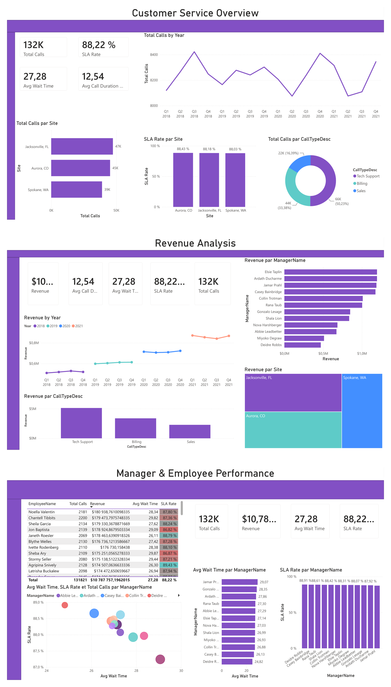
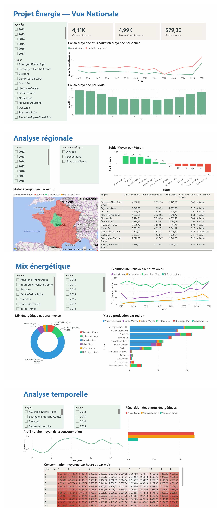

📁 Mes projets
Une sélection de projets qui montrent concrètement ce que je sais faire : développement web, analyse de données, dashboards et automatisation. Cette page s'enrichit au fil de mes réalisations.
✅ Projets réalisés
🌐 Site web CJBAT
Site web développé et déployé en production avec Flask, HTML/CSS. Mis en ligne et utilisé en conditions réelles.
Stack : Python (Flask), HTML, CSS
🌐 Site vitrine MadameDataIT
Ce site : conçu et développé en HTML/CSS pur, hébergé sur GitHub Pages avec domaine personnalisé, SEO optimisé (sitemap, meta tags, score 100/100).
Stack : HTML5, CSS3, GitHub Pages
📊 Dashboard Power BI — Service Client

Dashboard interactif conçu pour le suivi et l'analyse des performances d'un centre d'appels. Il permet de visualiser les principaux indicateurs opérationnels tels que le volume total d'appels traités, le taux de respect des accords de niveau de service (SLA), le temps d'attente moyen des clients et la durée moyenne des appels. Le projet est structuré en trois pages complémentaires : analyse de l'activité globale avec le suivi des appels par site, par période et par type de demande, ainsi que les indicateurs de qualité de service. Suivi des performances financières à travers l'évolution du chiffre d'affaires, la contribution des différents sites, des managers et des catégories de services.Ce tableau de bord permet d'identifier rapidement les tendances.
Stack : Power BI, DAX
⚡ Dashboard Power BI — Énergie France

Dashboard énergétique interactif analysant la consommation et la production d'électricité en France. Analyse nationale, équilibre énergétique régional, mix de production (nucléaire, hydraulique, éolien, solaire) et évolution temporelle des indicateurs.
Stack : Power BI, DAX
📦 Dashboard Looker Studio — Warehouse / Stores / Delivery
Dashboard logistique conçu pour analyser plus de 7 000 livraisons entre entrepôts et magasins à travers les États-Unis. Il permet de suivre les performances opérationnelles, les délais de traitement, les colis endommagés, les retours et les méthodes de réception des marchandises.
Stack : Looker Studio, Google Sheets
🌍 Dashboard Looker Studio — Analyse Mondiale de la Population
Tableau de bord interactif conçu sous Looker Studio pour l'analyse de données démographiques mondiales. Il permet de visualiser la population par pays, la répartition hommes/femmes, les tendances démographiques, ainsi que différents indicateurs socio-économiques à l'échelle internationale.
Stack : Looker Studio, Google Sheets
🚢 App Streamlit — Titanic, classification ML
Application interactive explorant le jeu de données Titanic (891 passagers) : statistiques descriptives, visualisations croisées (classe, genre, famille à bord, titre social) et entraînement en direct de trois modèles de classification (Random Forest, SVM, régression logistique) pour prédire la survie d'un passager.
Stack : Python, Streamlit, scikit-learn, Plotly
🏦 App Streamlit — German Credit, profil & risque
Exploration de 1 000 dossiers de prêt bancaire allemands : profil des emprunteurs, durée et montant des crédits, et un score de risque composite croisant montant, durée et niveau de qualification pour repérer les profils les plus exposés.
Stack : Python, Streamlit, Pandas, Plotly
🚧 Prochains projets (en préparation)
⚙️ Automatisation Make
Workflow d'automatisation connectant plusieurs applications via APIs REST et Google Sheets.
Stack : Make, APIs REST, Google Sheets
🗄️ Analyse SQL
Requêtes SQL sur un dataset, nettoyage des données et visualisation des résultats.
Stack : SQL
Vous avez un projet ?
Que ce soit pour un site web, un dashboard ou une automatisation, parlons-en.